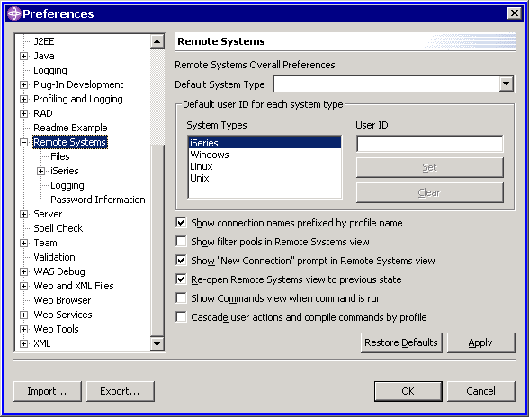
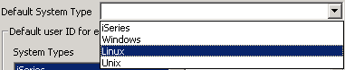
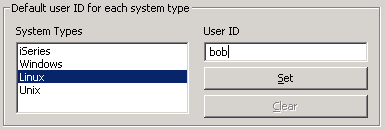

RSE Preferences API
RSE Preference Pages Category
All Remote System Explorer preference pages are rooted within the
preferences category com.ibm.etools.systems.core.ui.preferences.RemoteSystemsPreferencePage,
as shown here:

RSE Preference Pages Classes
There is no RSE-supplied base class for preference pages, but we recommend
you extend FieldEditorPreferencePage in package org.eclipse.jface.preference.
This JFace class allows you to create a preferences page as a sequence of "field
editors" which know how to initialize, load and store their values from their preferences store.
We also suggest the following when designing your preference pages:
- A interface for your preferences constants. It should store two constants per preference: the preference store key, and its default value.
- Static getter and setter methods in your preference page classes, one per preference, to query or update the preference value in the preferences store.
- An initDefaults(IPreferenceStore store) method per preferences class, that initializes the preference store value of each preference on that page.
- In your plugin class, an override of the initializeDefaultPreferences(IPreferenceStore store) method, so it calls your
initDefaults(store) method for each preference page class.
Should you need to query, or update, any RSE preferences you can do so via
the getters and setters in com.ibm.etools.systems.core.SystemPreferencesManager.
The RSE supplies a few field editors, complementing what JFace supplies
in org.eclipse.jface.preference. The RSE-supplied field editors, and the
RSE-supplied preferences pages, are all found in package com.ibm.etools.systems.core.ui.propertypages:
- SystemBooleanFieldEditor. Extends BooleanFieldEditor to add support for tooltip text.
- SystemComboBoxFieldEditor. Shows a combo box allowing the user to choose from a finite list of discrete possibilities.

- SystemKeyValueFieldEditor. Shows a list of hard-coded keys, each of which supports a user-specifiable value.

- SystemStringFieldEditor. For simple string preferences. Unlike the JFace string editor, this supports tooltip text and RSE validators and massagers on the typed text.